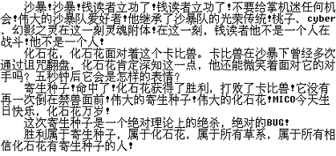

1月28日，一个值得纪念的日子。
在这一天，一篇可以载入口袋对战历史史册的文章，在《掌机迷》上发表了。
这篇文章，仿佛是上天赐予我们这些身陷泥潭的训练员来拯救这个乌烟瘴气的口袋界的。
而它的作者，必将作为一个神明般的名字，永远镌刻在每个训练员的心中。
如果你还是地球人的话，你一定已经知道了这个响彻天堂的名字：北京·钱读者 ！！！
他的文章，好比是一颗明亮的启明星，照亮了口袋界的未来。
他的队伍，好比是一座高大的指示牌，指明了训练家的方向。
正因如此，已经没有人能够直呼其名，我们只能用“钱神”这个名字表示我们对他的尊敬！
值此情人节之际，我将钱神的文章做了一些愚昧的点评，目的是为了能有更多的人知道，了解，崇拜上我们敬爱的钱神，是他赐予了我们现在的幸福生活，没有他，我们就不可能坐在这里！
让我们怀着敬畏的心情，再次领略钱神史诗一般的文章！！！
以下是引用钱神在2007-1-28《掌机迷Vol72》的文章：
各位小编大人们：
大家好！
为了响应“口袋帮一干人等”的响应，我向广大口袋玩家们华丽地献上我在这一个半月内耗费巨大精力组成的两支队伍。首先声明，我所组成的队组不一定是完美的，但在我自己看来已经很满意了。毕竟在《口袋妖怪》中，实战操作也是很重要的。
我喜欢组一些比较难组的队伍。目前沙暴队是大多数人都认为比较难组的队伍了。我本人也非常喜欢使用沙暴队，这次听说蓍子前辈也很爱玩沙暴队，算是找到同好了。下面就为大家献上我正在练的沙暴队，队伍构成见表
| No.248巨甲兽 |
冷冻光线+大文字+地震+岩崩 |
-物防+特攻 |
特攻252物攻128HP128 |
扬沙 |
剩饭 |
| No.227盔甲鸟 |
撒菱+吹飞+羽休+钻孔啄 |
-特攻+物防 |
物防252HP158HP100 |
锐利目光 |
剩饭 |
| No.346化石花 |
岩崩+剧毒+自我再生+镜反射 |
-特攻+特防 |
特防252物防158物攻100 |
吸盘 |
剩饭 |
| No.212巨钳螳螂 |
剑舞+十字切+试刀+接力 |
-特攻+物防 |
物攻252物防128HP128 |
虫族警报 |
剩饭 |
| No.376合金十字 |
彗星拳+地震+岩崩+高速移动 |
-特攻+物攻 |
特攻252物52特防100速度100 |
净体 |
专爱头巾 |
| No.437灵铜铎 |
铁壁+暝想+精神干扰+睡觉 |
-物攻+特防 |
HP252物防100特防158 |
耐热 |
剩饭 |
这支队伍走的是高攻击路线，这与一般的沙暴队有点不同。整个队伍里只有一个No.437号是新精灵。刚拿到图鉴时我就对这只精灵十分期待，它的抗性非常优秀，只有火、地两个属性弱点，再加上它的特性“浮游”或者“耐热”。实际属性弱点只有1个。而且，它还会铁壁、瞑想这种实用的加物防，特防的招数，是一面很实用的盾牌。盔甲鸟原本只有睡觉回复HP，但往往在呼呼大睡时被对方火电系招数秒杀，但这次飞行系新加了一招羽休（技能机器51号），这招效果等同于实用的回复招数“自我再生”“生蛋”。有了羽休，“天空之盾”将会更加强大。还有一点请注意，就是我的巨钳螳螂配了“剑舞”“接力”而没有用“挑拨”，这是因为我想把巨钳螳螂做成“反挑拨”的战斗力，很多接力怪物都很怕这招。但巨钳螳螂即使中了挑拨，也可以使用高达130的物攻种族值继续打击对方。另一方面，巨钳螳螂虽然抗性优秀但是耐久不高，挑拨对方后等于把火力集中在自己身上，这无异于自取灭亡。这支队伍就介绍到这里。
编者一语：
灵铜铎目前无论在国内还是在国外都具有绝顶人气，强化、岩菱、放墙、爆炸样样使得，精准镜片加催眠术的组合更是已经进入了“霸道”的领域。这个队伍里四只钢系怪物的组合实在硬派得很，只是要对对手专狙钢系的磁力怪物格外留神，只要消灭了钢系对策，这种组合的强大防守反击能力就体现出来了。
下面再献上我的另一支队伍，各位看官请注意了。
| No.450砂暴河马 |
地震+沙地狱+睡觉+咬碎 |
-特攻+物防 |
物防252物攻128HP128 |
扬沙 |
剩饭 |
| No.445烈牙龙 |
地震+瓦割+剑舞+龙爪 |
-特攻+物防 |
物攻252速度252HP6 |
沙隐术 |
专爱围巾 |
| No.346化石花 |
寄生种子+剧毒+自我再生+镜反射射 |
-特攻+物防 |
特防252HP252物防6 |
吸盘 |
剩饭 |
| No.272荷叶鸭 |
寄生种子+冷冻光线+能量球+亿万吸收 |
-物攻+特防 |
特防252HP100特攻158 |
任意 |
剩饭 |
| No.227盔甲鸟 |
撒菱+吹飞+羽休+剧毒 |
-特攻+物防 |
物防252HP252 |
锐利目光 |
剩饭 |
| No.141镰刀盔 |
剑舞+攀瀑+拍打+石刃 |
-特攻+物攻 |
物攻252速度252 |
甲虫盔甲 |
专爱头巾 |
这支沙暴队虽然与上面介绍的队伍有两支精灵重复，但更偏重防守和消耗，同样是一支有很多亮点的队伍。No.450号是本作新加的扬沙精灵，虽然破坏力不如巨甲，但属性比巨甲好，起码没有4倍弱点，可以作为物防盾。No.445的种族值有600之多，地位等同于快龙，血翼飞龙和巨甲兽，而且速度是它们当中最快的。配合它的沙隐特性，它在沙暴队中也算是一个强大的攻击力。值得一提的是荷叶鸭这只PM，它本身不抗沙暴，但它有寄生种子来弥补HP的消耗，可以用它来抵挡水、冰系招式。两支队伍中都有的化石花放在这里一起说说，化石花是著名的消耗PM，它本身耐久不错，又会自我再生这种实用的回复技能，再加上剧毒、寄生种子这些优秀的消耗招数，放在沙暴队里消耗对手更是锦上添花。我希望蓍子能考虑这只队伍，因为我发现你在培养砂暴河马。
编者一语：
钱读者看照片看得够仔细（笑）。当然，想在钻石珍珠版里玩沙暴，一只优秀的河马总是应该养的。在沙暴队里用荷叶鸭是在下没想过的主意，如果不考虑沙暴的负面效应，荷叶鸭的属性和能力确实弥补了沙暴队的几个致命弱点，今后一定要实际试试这种用法。至于烈牙龙，在下已经在用专爱围巾+逆鳞这个“大众组合”，这支快刀肯定会在在下的队伍中常驻下去的。
沙暴队往往有很明显的属性漏洞，但我配的这两只队伍基本上没什么明显的属性弱点。为什么说“基本上”呢？因为第一只队伍中有三只PM怕火……其实当时组完队伍之后我也吓了一跳。当然，火系PM在沙暴队面前也无法构成太大的威胁，因为地岩招数在沙暴队中非常普及。
以上两支队伍仅仅是给玩沙暴的玩家做参考，起到一个抛砖引玉的作用，希望广大口袋迷早日组成自己的队伍。最后强烈呼吁一下，一定要做一期沙暴队赏析专题，并且一定要用到我的这两支沙暴队。我可是一看完“小编”宣言就立刻写下了这么多东西，上面的要求小编可以不去做（如果你们忍心这么对待你们忠实的读者的话），但是一定要在PG BAR上说一声，我的信已经收到了，好让我知道我们家附近的邮筒是好的。
最后，祝小编们工作顺利，身体健康。为工作伤了身体，可是广大读者都不愿看到的。（北京钱伟）
编者一语：
非常感谢钱读者的问候与关照。这封信被蓍子从岚枫手中直接“截”到了口袋迷CLUB来，并且以这种形式刊登在这里，不知钱读者还满意吗？《口袋妖怪》中的组队与配招非常深奥，有很多值得研究的地方。今后我们还会以这种形式陆续选登读者的来信，还望广大口袋迷多多捧场。
朋友们，看见了吗？这正是钱神呕心沥血之作啊！这篇文章作为口袋界具有划时代意义的一座里程碑，无处不显示了钱神那博大精深的文化底蕴、夯实牢固的理论基础和登峰造极的的对战水平！此文只应天上有，为何流落到民间？这再一次证明了钱神无可动摇神的地位！
为了大家能够更好的理解钱神文章的真髓，在下做以简单的点评。当然，我的东西是绝对不能拿来和钱神的神文比较的，大家姑妄听之，姑妄信之。
在文章的开头，钱神就让大家看到了他温文尔雅又彬彬有礼的问候。而接下来，钱神就表明了他的态度：沙暴队是比较难组的队伍。诚然，沙暴队确实是目前口袋界的一个瓶颈——许多人耗尽毕生所学都难以组出一个成功的沙暴队，钱神却一次组出两个队伍，不得不让人惊叹他的深厚功底！然而，钱神仍不失谦虚的说：“我所组成的队组不一定是完美的，但在我自己看来已经很满意了。”其实，这两个队伍已经凌驾于目前存在的所有队伍，只能用完美来形容！！！
下面我们对第一个队伍做以赏析。
对巨甲兽的理解，钱神可称是口袋界的翘楚。多年的经验使他毫不犹豫的放弃了巨甲的物防而不是速度，而主特攻并放弃本系咬碎等物攻招数的巨甲也一定令对手防不胜防。
钢鸟是钱神队伍里的主要物盾，被钱神称为“天空之盾”实在是它莫大的荣誉。特性方面钱神选择了在对战中更为有效的锐利目光，有效防止了泛滥的降低命中的招数。为了使钢鸟能更好的发挥作用，钱神采用了非常新颖的努力值分配方法从而使钢鸟HP努力达到一个新的高度。相信不久之后，这种由钱神首创的努力值分配法将席卷整个口袋界。
化石花是钱神最为得意的一只PM，而钱神在它身上总会有许多惊人的灵感。拿这个化石花来说，使用镜反而完全不加HP的努力，这种天才的想法总会令我们这些初学者叹为观止。
螳螂用钱神自己的话说就是“我的巨钳螳螂配了“剑舞”“接力”而没有用“挑拨”，这是因为我想把巨钳螳螂做成“反挑拨”的战斗力，很多接力怪物都很怕这招”。多么新颖的思想！目前大家战斗中使用的螳螂无一例外是挑拨型的，却没有一个人想到螳螂竟然能当作接力手使用！多么天马行空的想象力！并且钱神舍弃了本系的钢系招数而选择了打击面广泛的试刀，不得不让人对钱神出色的战术头脑由衷的赞叹啊！
钢螃蟹可以说是这个队伍中最有特点的PM，而且高移的钢螃蟹早已是被大家公认了的强悍。钱神不仅选择了加满钢螃蟹的特攻，并且为了追求更惊人的破坏力而选择了专爱头巾。这个搭配可能有些人会不理解，然而这正是钱神的高明所在！！！这种史无前例的搭配正是利用了对手不知所措的心理进而使对手紧张和混乱，高移的出现必然会使对手手忙脚乱，而专爱也确保了伤害的高效率输出。修满特攻也能使得性格方面的漏洞得到修补。这个战术可以说是钱神最驾轻就熟的战术了，在下个队伍里也有体现。
唯一比较没有特点的就是钢钟了。这或许是因为钱神还没有太多的应用这个PM，相信日后钱神一定会为大家奉献出这个PM开天辟地的战术！
整体来看，这个队伍的确是应了钱神自己的评价——高攻击路线。整个队伍中竟然有3个PM的攻击招数超过了两个，实在惊人。虽然如钱神所说，全队有三只怕火并且有四个钢系，不过我是绝对相信在钱神的完美操作之下，蜻蜓龙、巨甲兽和磁浮王之流即便是有火招也不会对钱神的队伍造成任何威胁。
第二个队伍是钱神自己就比较满意的，在我们眼里就更是难以望其颈背了。真所谓是“加一分则白，去一分则黑；添一分则胖，减一分则瘦”。
钱神的沙暴河马是本队的引沙手，并且秉承了钱神一贯出奇制胜的风格：舍弃了三牙、石刃等招数，却选择了沙地狱，舍弃了偷懒，却选择了睡觉。面对这样一个特立独行的河马，我们不得不再次拜倒在钱神强大的实力下。
地龙、镰刀盔的战术思想和钢螃蟹基本相同，并且效果有过之而无不及：舞剑强化物攻的同时，地龙用围巾弥补速度而镰刀用头巾进一步强化物攻，实在是强悍的很，完成强化之日即是对手失败之时。在钱神优异的技巧之下这两只PM可以说发挥了它们的所有价值。
荷叶鸭是钱神队伍中防水的主力，它的最大特点就是对对手的水系有极大的威胁：两个草系的招数定然会让对手措手不及：本来对手已经计算好亿万吸取不能秒掉自己的PM时，钱神却能出其不意的用能量球杀之。这个战术本身十分可怕，在钱神的手中更是只能用恐怖来形容。
钢鸟与上个队伍中基本一样，只是钱神处于厚道方面的考虑没有使用他招牌式的努力分配，这也让我们看到了钱神作为一个顶级高手的对战修养。
下面是...
下面就是...
接下来就是..........
接下来要介绍的就是大家期待已久钱神最为王道的一只PM：化石花！！！
朋友们，你们知道为什么我要特意把这个PM放在最后吗？想知道一向低调的钱神还是无法掩盖他夺目的光芒吗？让我来告诉大家这个已经被口袋界公认的答案：那是因为他对化石花这个PM的理解和使用在当今世上决没人能出其右，实在是当之无愧的No.1！！！引用钱神自己对这个PM的看法：“化石花是著名的消耗PM，它本身耐久不错，又会自我再生这种实用的回复技能，再加上剧毒、寄生种子这些优秀的消耗招数，放在沙暴队里消耗对手更是锦上添花。”这个理解实在是既深刻又透彻，而钱神对种子化石花的使用也绝对无愧他神的称号，虽然这个战术不是他原创，然而却是他最让大家叹为观止的绝技。曾经有人为钱神写了这样一段话，让我们一起欣赏一下

这话虽然并不确切（因为钱神自从接触对战以来从来没有人能把他逼上如此绝境），却也从令一个方面上反映了钱神种子化石花技巧的炉火纯青。许多钱迷也是因为种子化石花才认识并疯狂的迷上了钱神，让我们一起为这个钱神麾下头号战将鼓掌欢呼！！！！！！！！！！！
总观这个队伍，无论是打击力，防御力，爆发力，灵活力都可算得上是目前所能达到的最高水平。特别是钱神的招牌PM化石花的加入，无疑使这个队伍几乎可以立与不败之地。
在文章的最后，钱神也对自己的队伍做了简单的评价。在本人看来，钱神真的是过分谦虚了：这两个队伍简直是完全没有属性弱点啊！而随后的问候也让大家看到了一个修养出色的钱神，口袋界有这样一个有修养，有文化，有实力，有头脑，有人品的神话般的人物，实在让人感动的热泪盈眶啊！
到此为止，本人对钱神的文章和队伍评析就到此结束了。其实以上只不过是本人对钱神文章一点点的浅见，远远没有挖掘到钱神文章深层的全部内容。其实我写这个的目的引用钱神的话就是“起到一个抛砖引玉的作用”，希望能有更多的人能加入到我们的行列中来，共同探索钱神文章用深不可测的内涵。
然而据我所知，由于篇幅原因，这篇来信中做了部分删节。由于编辑的疏忽，竟然导致我们成千上万的人无法领略到钱神文章全部的风采，不能不说是一个巨大的遗憾。然而，做过删节的文章能造成如此的轰动，也从某种方面体现了钱神的过人实力！能得到这样高手的垂青，《掌机迷》之幸事，口袋界之幸事啊！！！！
钱神是上帝派来的使者，我们将把钱神的教诲永远铭记！太阳的光辉照我身，钱神的光辉照我心！！
最后，请允许我用一首诗来歌颂钱神的丰功伟业：
口袋天王是钱神，带领新手来入门。
惊世骇俗沙暴队，一语惊醒梦中人！
读罢此文笑到死，清明别忘来上坟…
膜拜处